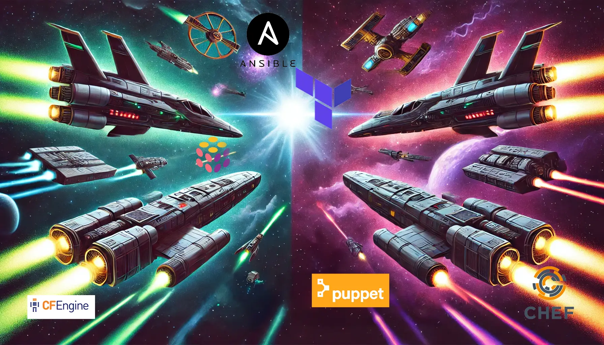

When to choose CFEngine over Ansible, and other IaC Tool Questions
Published on September 26, 2024 | Last updated on September 26, 2024

History of Infrastructure as Code
Infrastructure as Code appears to be a natural evolution of computing and human thinking in general. In this post I explore the history of IaC tools and how to select then for a project.
Parallels can be seen in early factories and the idea of scientific management, in chemical engineering, electronics, and software development in general. Each time a new tools is developed, the first people do so for the first time. With time "best practices" emerge from the many lessons learned through experimentation, intentional exploration and accidental mishaps.
Infrastructure as Code can perhaps be traced back to earlier ideas of configuration management
The wikipedia definition is a good place to start:
Configuration management (CM) is a management process for establishing and maintaining consistency of a product's performance, functional, and physical attributes with its requirements, design, and operational information throughout its life.
Rather than existing as the abstract process, IaC tools are actualized implementations that can are instrumental in establishing and maintaining consistency of a product's performance..." In this case, the product is the collection of computers under management, and the requirements ideally are input into the code describing the infrastructure, and the tools establish and maintain it using a variety of techniques.
The chronology of IaC (Infrastructure as Code) and configuration management, CFEngine appeared on the scene far earlier than everything else.
Puppet, Chef, and everything that followed them happened over a decade after the initial CFEngine release.
Today all the tools mentioned below are still being used, though from what I can tell from Github Stars, Ansible and Terraform are winning developer popular culture mindshare. In addition, the JetBrains DevEcosystem 2023 Survey and StackOverflow 2023 Developer Survey also show Terraform and Ansible far ahead of Chef, Puppet, and Pulumi. CFEngine is not listed. I've included Kubernetes in this list, because although it is almost in a product class of its own, it does have an enormous amount of mindshare. In fact, none of the Graduating or Incubating Cloud Native Compute Foundation projects are listed below, except for Kubernetes.
Chronology
| Tool (with GitHub link) | Author/Organization | Initial Release Date | Source |
|---|---|---|---|
| CFEngine | Mark Burgess | 1993 | University of Oslo |
| Puppet | Luke Kanies (Puppet Labs) | 2005 | Wikipedia |
| Chef | Adam Jacob (OpsCode, now Progress) | January 2009 | Chef |
| Salt Stack | Thomas S. Hatch (SaltStack, now VMware) | March 2011 | GitHub |
| AWS CloudFormation | Amazon Web Services | February 2011 | InfoQ Innfoworld |
| Ansible | Michael DeHaan | February 2012 | Ansible Blog via archive.org |
| Terraform | Mitchell Hashimoto (HashiCorp) | July 2014 | RedHat |
| Kubernetes | Google (now Cloud Native Computing Foundation) | June 2014 | Github |
| Pulumi | Joe Duffy (Pulumi, Inc.) | June 2018 | Pulumi |
I'll add Nix as an honorable mention for future exploration.
I group these tools into 5 groups:
- Genesis: CFEngine
- Evolution 1: Puppet, Chef, Salt Stack, AWS CloudFormation
- Mature Tools: Ansible, Terraform
- Evolutionary Leap: Pulumi IaC
- Disruptive Different Approach: Kubernetes
CFEngine paved new ground and can be considered the genesis of the Infrastructure as Code Era. It has proven to be a robust tool for advanced and specific use cases within important "enterprise" systems.
Puppet and Chef entered the scene around the same time and appear to promote two different evolutions of the core idea.
Puppet uses a declarative Ruby-based DSL with a client/server model. You declare the state you want, and the clients attempt to make it so.
Chef uses a different Ruby-based DSL that is procedural. As such, more steps are required to ensure idempotency, that is, running the tool a second time should be the same as running it once.
Ansible is similar to Chef in that it is procedural at its core and defaults to a "push" model, though it supports a "pull" model as well.
Terraform somewhat belongs in its own category, as it is focused on provisioning infrastructure and less about configuring the services running on the infrastructure. Although Terraform modules can manage just about anything, the core focus is to deploy infrastructure such as containers, VMs, load balancers, firewalls, etc.
Pulumi is a newer entrant that promises to make describing and configuring infrastructure easy and friendly using your programming language of choice. It has similar concepts to Terraform and can, in fact, import Terraform providers.
Choose a Tool
How does one choose a tool? Is there a single tool that's best for all scenarios? Do I need to learn all of them?
All these questions and more will be answered below.
Rather than immediately answer the questions, I'll explain my thought process.
First, I envision the final outcome of my project. Specifically, I am considering the requirements and architecture outlined in Personal Infrastructure Part 5: Core Supporting Services.
Then I look at all the tools out there, using Claude, ChatGPT, and Google to gather information. I collect this information and build a mental model of what each tool actually does, what it's good at "on paper," and match that with my intentions/requirements for the project.
In my research, I came across the concept of immutable infrastructure. This terminology may have been introduced by HashiCorp, but it applies to the IaC space as a whole. Specifically, both Terraform and Pulumi are designed around the idea that as much as possible should be immutable, that is, once it is created, it does not change. If a change is needed, an old resource should be removed, and a new one added to replace it. If this concept appeals to you, it seems these tools should be strongly considered for "Deploying Infrastructure." If I refer back to my article Personal Infrastructure Part 5: Core Supporting Services and consider my goals, the idea of immutable infrastructure makes a lot of sense.
Specifically, I'd like to easily create and destroy infrastructure and be able to recreate it on new hardware after any kind of failure. This is only possible if configuration is stored somewhere, and becomes much easier if you know that applying the configuration always results in the hardware and software designated as "infrastructure" being in the same immutable state.
With this in mind, I've made the following table:
| Tool | Declarative vs Procedural | Pull vs Push | Language | Main Goals | GitHub Stars |
|---|---|---|---|---|---|
| Ansible | Procedural | Push | YAML | Configuration |  |
| Terraform | Declarative | Push | HCL | Provisioning |  |
| Pulumi | Declarative | Push | Various | Provisioning |  |
| Chef | Procedural | Pull | Ruby | Configuration |  |
| Puppet | Declarative | Pull | Ruby | Configuration |  |
| CFEngine | Declarative | Pull | Custom Language | Configuration |  |
Table 1. Key attributes of leading IaC tools
Looking at this table, a few things are clear to me:
-
CFEngine, Puppet, and Chef are far less popular. Terraform and Ansible are much more popular than the rest.
-
Ansible could serve both my provisioning and configuration needs; however, from experience, I really don't like it. Idempotency and declarative Ansible projects appear to be more of an attempted "catch up" as projects like Puppet, Pulumi, Terraform, and CFEngine have clearly demonstrated the value of the declarative approach. However, it "feels" clunky and like an afterthought to me.
- Terraform and Pulumi have a more limited scope. They both focus on the provisioning of architecture.
Based on this, if I choose not to use Ansible, my choices for configuration are CFEngine, Chef, and Puppet. I'll eliminate CFEngine for being old and unpopular, and I'll eliminate Chef because I value declarative languages for defining infrastructure.
Another common theme I've seen is that Ansible is considered easy, and these other tools are considered "more difficult." When I look more deeply at the criticism, however, it appears that the more "difficult" tools solve real problems, making their learning curve part of the "inherent complexity," whereas using Ansible may be easier at first, but those complexities don't go away just because your tool doesn't have native support for them. I've found myself hacking together strange Ansible roles, support scripts, and more just to get the basics to work.
Check out my articles on my "Personal Infrastructure series" 1-4, as well as my article on Deploying Django for more information:
- Personal Infrastructure Part 1: Introduction and Basic Ansible Setup
- Personal Infrastructure Part 2: Setting up Secret Storage for Ansible
- Personal Infrastructure Part 3: Quality of Life Improvements with Justfile Automation
- Personal Infrastructure Part 4: Creating and Storing Initial Secrets
- Deploying A Basic Django Site using Ansible
To finish answering my questions, no I don't think I need to learn all the tools. I will try the tools that appeal to me and fit my requirements, and if they don't work out, I'll return to this article and try something else.
Resources
Here are some biased, though informationally dense articles about these tools from two competitors: